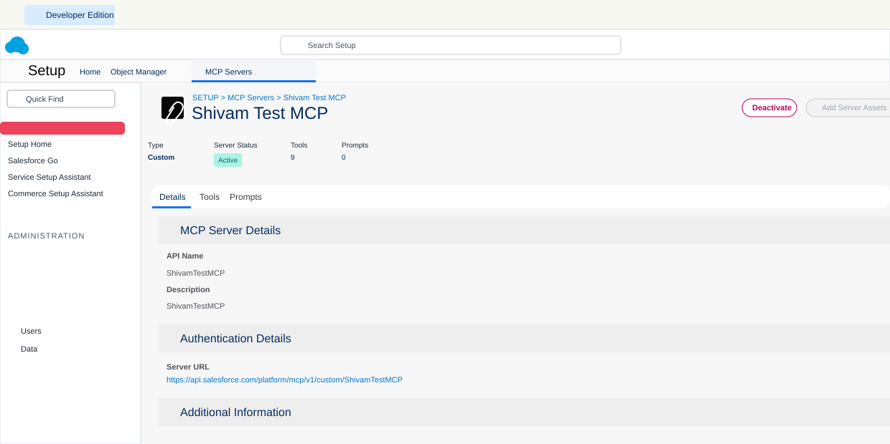
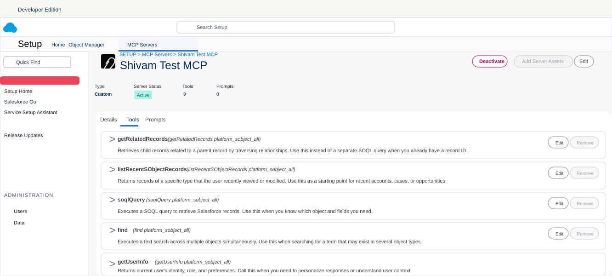
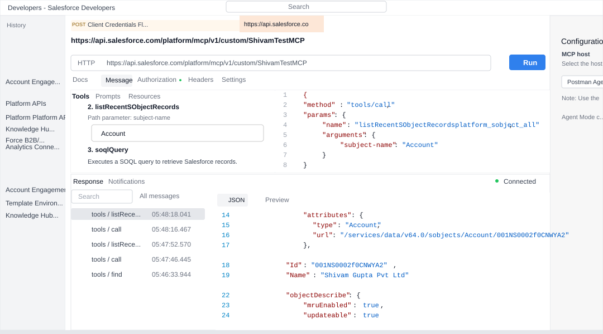

Introduction
Salesforce introduced Salesforce Headless 360 on April 15, 2026 as a strategic shift in how humans and agents work with the Salesforce platform. The short version is simple: Salesforce capabilities should not be trapped behind browser screens. Data, workflows, business logic, metadata, analytics, and agent experiences need to be available through APIs, Model Context Protocol tools, CLI commands, and reusable experience components.
This matters because AI agents do not click through Salesforce screens the way a user does. They call tools. They execute actions. They need structured context, reliable business operations, and governance. Headless 360 is Salesforce's umbrella for that direction: make the full Customer 360 platform programmable and agent-ready without losing the Salesforce trust, permission, and workflow model that enterprises already rely on.
What it is
Salesforce Headless 360 is the idea that everything important on Salesforce should be usable without requiring a person to open the Salesforce UI. Salesforce describes this as exposing platform capabilities as APIs, MCP tools, or CLI commands so agents and developers can build, act, and deliver experiences from any surface.
In practical terms, Headless 360 has four layers:
| Layer | Salesforce capability | What it gives admins and developers |
|---|---|---|
| System of context | Data 360, Customer 360 records, Salesforce schema, business data | Agents can ground answers and actions in trusted customer, account, case, opportunity, and unified profile data. |
| System of work | Flows, Apex, approvals, business rules, product APIs, DevOps Center | Agents can invoke work that already exists instead of rebuilding enterprise process logic outside Salesforce. |
| System of agency | Agentforce, Hosted MCP Servers, Salesforce DX MCP Server, Agentforce Vibes, Agentforce Studio | Teams can create, connect, test, and operate agents with governed access to platform tools. |
| System of engagement | Slack, Agentforce Experience Layer, mobile, chat, voice, third-party clients | The user experience can happen where the user already works, while Salesforce remains the business platform underneath. |
Headless 360 is easiest to understand with this mental model: Salesforce remains the platform of record and process, but the interaction surface becomes flexible. The surface may be Slack, ChatGPT, Claude, Cursor, a mobile app, a custom React app, or a service workflow. The underlying data, permissions, and automation still come from Salesforce.
Why it matters
Historically, many Salesforce workflows assumed a human user would log in, navigate a page, inspect a record, click buttons, and submit changes. That model still works for many business users, but it does not match how AI agents and modern developer workflows operate.
Headless 360 matters because it moves Salesforce into an agentic operating model:
- Agents can act on Salesforce safely: Hosted MCP Servers run tool calls through Salesforce authentication, object permissions, field-level security, and sharing rules.
- Developers can build inside their preferred workflow: Agentforce Vibes, Salesforce DX MCP tools, CLI commands, and DevOps Center MCP reduce the need to switch between admin screens, terminals, docs, and IDEs.
- Admins can curate access: Custom MCP servers let admins assemble persona-specific tool sets instead of exposing every possible operation to every client.
- Business logic is reused: Flows, Apex actions, Aura-enabled methods, Apex REST endpoints, API Catalog entries, Prompt Builder templates, Data 360, and Tableau Next can become agent-consumable assets.
- Experience is no longer tied to one UI: The Agentforce Experience Layer is designed to render richer interactions across Slack and other supported surfaces.
- Governance becomes a lifecycle concern: Testing Center, Custom Scoring Evals, Agent Script, Observability, Session Tracing, A/B Testing, and Agent Fabric all address the problem of agent behavior before and after launch.
Architecture map
The most practical way to adopt Headless 360 is to separate the announcement into the parts you can configure and use.
| Capability | What it does | Admin perspective | Developer perspective |
|---|---|---|---|
| Salesforce Hosted MCP Servers | Expose Salesforce data, automation, prompts, and selected product capabilities to MCP-compatible clients. | Activate only the servers and custom tool sets each persona needs. | Expose Apex, Flow, REST, Named Queries, and APIs as well-designed tools. |
| Salesforce DX MCP Server | Gives agentic IDEs Salesforce development tools for metadata, tests, deployment, and project work. | Ensure users have the right org access and tool governance. | Use natural language for common DX tasks while still reviewing source changes. |
| Agentforce Vibes | Salesforce's enterprise coding agent experience with plan and act modes, skills, MCP tooling, and org awareness. | Enable the capability and set usage expectations. | Generate, refactor, test, and deploy Salesforce code with an org-aware assistant. |
| Agentforce Vibes IDE | Browser-based VS Code environment with Salesforce extensions, CLI, GitHub integration, and Agentforce Vibes. | Accept terms, control eligible users, and guide sandbox/developer org usage. | Start from Setup without local install, then build Apex, LWC, Flow, and metadata in a cloud IDE. |
| Agentforce Experience Layer | Separates what an agent does from how the interaction renders across channels. | Design business journeys that can happen in Slack or other supported surfaces. | Build custom front ends or interaction components while keeping Salesforce underneath. |
| Testing and observability | Testing Center, Custom Scoring Evals, Agent Script, Session Tracing, Observability, and A/B Testing. | Define acceptance criteria, business policies, and promotion gates. | Instrument, evaluate, debug, and tune agent behavior over time. |
Admin setup
For a practical first implementation, start with Hosted MCP Servers. They are the most direct way to let an external AI client access Salesforce in a governed way.
Step 1: Choose the first use case
Do not begin with broad write access. Pick a narrow persona and a narrow business outcome.
- Sales rep read-only assistant: account briefing, opportunity summary, next-step review.
- Support manager assistant: open case analysis, escalation review, SLA explanation.
- Data analyst assistant: Data 360 or Tableau Next question answering with no record mutation.
- Developer validation assistant: query schema, inspect test data, and validate metadata in a sandbox.
Step 2: Create an External Client App
Salesforce requires an External Client App for MCP client authentication. Connected Apps are not supported for this use case.
- In Setup, search for External Client App Manager.
- Click New External Client App.
- Fill in the Basic Information section.
- Enable OAuth settings under the API section.
- Add the callback URL for your MCP client.
- Add OAuth scopes:
mcp_apiandrefresh_token. - Enable JWT-based access tokens for named users.
- Require PKCE for supported authorization flows.
- Deselect the other Security options, including access tokens in the
access_tokenparameter, Client Credentials Flow, Require Secret for Web Server Flow, Require Secret for Refresh Token Flow, and Authorization Code and Credentials Flow. - Create the app.
- Open Settings, then Consumer Key and Secret under OAuth Settings, and copy the consumer key.
Salesforce notes that the External Client App might take up to 30 minutes to become available worldwide. If Postman authentication fails immediately after app creation, wait and try again before changing the configuration.
Common callback URLs from Salesforce's setup guidance:
Postman desktop: https://oauth.pstmn.io/v1/callback
Postman web: https://oauth.pstmn.io/v1/browser-callback
Cursor: cursor://anysphere.cursor-mcp/oauth/callback
Claude: https://claude.ai/api/mcp/auth_callback
ChatGPT: Copy the callback URL from ChatGPT Advanced settingsStep 3: Activate the right MCP server
MCP servers are disabled by default, which is the right security posture. Activate only what the first use case needs.
- In Setup, search for MCP Servers.
- Open MCP Servers under API Catalog.
- Review available standard servers.
- Enable the specific server for your pilot.
- Wait a short period for activation to propagate before testing.
For most pilots, start with platform/sobject-reads. Avoid platform/sobject-all until you have a validated business need, clear user permissions, and an approval model for write actions.
MCP configuration screens
After a custom MCP server is active, the Details tab shows the server type, status, tool count, prompt count, and the server URL that the MCP client uses for authentication and tool discovery.

The Tools tab is where admins and developers review which tools the server exposes. This is the practical governance screen: if a tool is listed here, an MCP-compatible client can discover it and may try to invoke it based on the user's prompt.

Step 4: Pick the server URL
The URL changes based on whether the org is production or sandbox/scratch.
Production:
https://api.salesforce.com/platform/mcp/v1/platform/sobject-reads
Sandbox or scratch:
https://api.salesforce.com/platform/mcp/v1/sandbox/platform/sobject-reads
Custom production server:
https://api.salesforce.com/platform/mcp/v1/custom/ShivamTestMCP
Custom sandbox or scratch server:
https://api.salesforce.com/platform/mcp/v1/sandbox/custom/ShivamTestMCPStep 5: Test with Postman first
Postman is a good first test because it calls the MCP tool directly and shows raw JSON. That helps you separate Salesforce setup issues from LLM interpretation issues.
- Create a new Postman request and select MCP.
- Switch the request transport from STDIO to HTTP.
- Paste the MCP server URL.
- Open the Authorization tab.
- Set Auth Type to OAuth 2.0.
- Set Add authorization data to to Request Headers.
- Click Configure New Token.
- Set Grant Type to Authorization Code (With PKCE).
- Keep the Postman callback URL and confirm that it exactly matches the callback URL in the External Client App.
- For Postman desktop, use
https://oauth.pstmn.io/v1/callback; for Postman web, usehttps://oauth.pstmn.io/v1/browser-callback. - Check Authorize using browser.
- Use the correct Salesforce authorization and token URLs for the org type.
- Use the External Client App consumer key as the client ID and leave the client secret blank.
- Set Code Challenge Method to SHA-256.
- Leave Code Verifier and State blank.
- Use
mcp_api refresh_tokenas the scope. - Set Client Authentication to Send client credentials in body.
- Click Get New Access Token, authenticate to Salesforce, authorize the app, and click Use Token if Postman shows the Manage Access Tokens modal.
- Call
getUserInfofirst, then testsoqlQueryorlistRecentSObjectRecords.
Developer setup
Developers usually touch Headless 360 in two ways: they use Salesforce development tools through Agentforce Vibes or Salesforce DX MCP, and they build reusable Salesforce logic that admins can expose through Hosted MCP Servers.
Option A: Use Agentforce Vibes IDE
Agentforce Vibes IDE is a browser-based VS Code environment launched from Salesforce Setup. It includes Salesforce Extensions, Salesforce CLI, GitHub integration, and Agentforce Vibes inside the IDE.
- Ask the admin to accept the relevant Salesforce terms and enable the IDE for eligible users.
- Open Setup and search for Agentforce Vibes.
- Launch the IDE from the org.
- Confirm your org metadata loads into an SFDX project.
- Use Plan mode for analysis and Act mode only when you are ready for file changes.
- Run tests and review generated source before deployment.
Option B: Use Salesforce DX MCP tools in an IDE
The Salesforce DX MCP Server is aimed at developer workflow: metadata, tests, deployments, LWC work, Code Analyzer, and related DX tasks. It is different from Hosted MCP Servers.
| Dimension | Salesforce DX MCP Server | Salesforce Hosted MCP Servers |
|---|---|---|
| Runs on | Local or IDE environment | Salesforce infrastructure |
| Authentication | Salesforce CLI credentials | Per-user OAuth 2.0 with PKCE |
| Main use case | Build, test, deploy, and inspect Salesforce projects | Give AI clients governed access to org data and business logic |
| Typical user | Developer or release engineer | Admin, business user, developer, analyst, or external AI client |
Option C: Build MCP-ready business actions
For custom tools, design your Salesforce logic so an AI client can safely invoke it. Good candidates include:
- Autolaunched Flows for admin-owned processes.
- Apex
@InvocableMethodclasses for validated business operations. @AuraEnabledApex methods that already support Lightning components.- Apex REST endpoints that represent stable platform APIs.
- Named Queries when generic SOQL access is too broad.
- API Catalog endpoints for supported Salesforce APIs and Connect APIs.
MCP example
Here is a safe first test using the read-only SObject server in a sandbox. The goal is to verify identity, schema access, and a simple query before you let an LLM reason across the tool set.
1. Server URL
https://api.salesforce.com/platform/mcp/v1/sandbox/platform/sobject-reads2. OAuth configuration
Grant type: Authorization Code with PKCE
Add auth data to: Request Headers
Authorization URL: https://test.salesforce.com/services/oauth2/authorize
Access token URL: https://test.salesforce.com/services/oauth2/token
Client ID: External Client App consumer key
Client secret: Leave blank when using PKCE
Scope: mcp_api refresh_token
Code challenge: SHA-256
Code verifier: Leave blank
State: Leave blank
Client auth: Send client credentials in body3. First tool call: user verification
In Postman's MCP request view, choose getUserInfo from the tool list and run it. The response should show the authenticated user's identity and context. This confirms that the connection is not using an anonymous or shared integration identity.
4. Second tool call: read a small account set
Choose soqlQuery and use a small query that avoids sensitive fields while you validate the setup.
{
"method": "tools/call",
"params": {
"name": "soqlQuery",
"arguments": {
"query": "SELECT Id, Name, Industry FROM Account ORDER BY LastModifiedDate DESC LIMIT 5"
}
}
}5. Natural language test in an MCP client
After Postman works, connect Claude, ChatGPT, Cursor, or another supported MCP client using the same server URL and the External Client App consumer key. Then ask a focused prompt:
Use Salesforce to find the five most recently modified Accounts.
Return only Id, Name, and Industry.
Do not update any records.If the client asks for confirmation before using tools, approve only the read-only action. If it tries to use a write or delete tool during a read-only test, your server selection or client configuration is wrong.
Working Postman example
The screenshot below shows a working custom MCP server call from Postman. The request calls listRecentSObjectRecordsplatform_sobject_all with subject-name set to Account, and the response confirms that Postman is connected and receiving Salesforce account data through the MCP tool.

Custom tool example
Standard SObject tools are useful, but the best enterprise designs expose business capabilities, not raw database operations. A sales assistant should not need to know five different queries and updates to qualify a lead. Give it one safe tool that performs the validated business operation.
Example: Apex invocable action for account health
The following Apex class is intentionally narrow: it accepts Account IDs and returns a lightweight account health summary. It is read-oriented and safe to expose as a custom MCP tool after permissions are reviewed.
public with sharing class AccountHealthMcpAction {
public class Request {
@InvocableVariable(required=true)
public Id accountId;
}
public class Response {
@InvocableVariable
public Id accountId;
@InvocableVariable
public String accountName;
@InvocableVariable
public Integer openCaseCount;
@InvocableVariable
public Decimal openPipelineAmount;
@InvocableVariable
public String recommendation;
}
@InvocableMethod(
label='Get Account Health Summary'
description='Returns open case count, open pipeline amount, and a short account health recommendation.'
)
public static List<Response> summarize(List<Request> requests) {
Set<Id> accountIds = new Set<Id>();
for (Request req : requests) {
if (req != null && req.accountId != null) {
accountIds.add(req.accountId);
}
}
Map<Id, Account> accounts = new Map<Id, Account>([
SELECT Id, Name
FROM Account
WHERE Id IN :accountIds
]);
Map<Id, Integer> caseCounts = new Map<Id, Integer>();
for (AggregateResult ar : [
SELECT AccountId accountId, COUNT(Id) caseCount
FROM Case
WHERE AccountId IN :accountIds AND IsClosed = false
GROUP BY AccountId
]) {
caseCounts.put((Id) ar.get('accountId'), (Integer) ar.get('caseCount'));
}
Map<Id, Decimal> pipelineByAccount = new Map<Id, Decimal>();
for (AggregateResult ar : [
SELECT AccountId accountId, SUM(Amount) pipeline
FROM Opportunity
WHERE AccountId IN :accountIds AND IsClosed = false
GROUP BY AccountId
]) {
pipelineByAccount.put((Id) ar.get('accountId'), (Decimal) ar.get('pipeline'));
}
List<Response> results = new List<Response>();
for (Id accountId : accountIds) {
Account acc = accounts.get(accountId);
if (acc == null) {
continue;
}
Integer openCases = caseCounts.containsKey(accountId) ? caseCounts.get(accountId) : 0;
Decimal pipeline = pipelineByAccount.containsKey(accountId) ? pipelineByAccount.get(accountId) : 0;
Response res = new Response();
res.accountId = accountId;
res.accountName = acc.Name;
res.openCaseCount = openCases;
res.openPipelineAmount = pipeline;
res.recommendation = openCases > 3
? 'Review support risk before expanding the account.'
: 'No immediate support risk detected.';
results.add(res);
}
return results;
}
}How to expose it
- Deploy the Apex class and tests to a sandbox first.
- Confirm the class uses
with sharingand only queries fields the target users should see. - In Setup, open Salesforce MCP Servers.
- Create a custom MCP server for the target persona, such as Sales Account Assistant.
- Add the Apex invocable action as a custom tool.
- Name the tool clearly, for example
getAccountHealthSummary. - Use a specific tool description: "Use this tool to summarize one account's open support risk and open pipeline. This tool does not modify records."
- Mark the tool annotations appropriately, such as
readOnlyHint: trueanddestructiveHint: false, where the setup UI or API supports those hints. - Connect your MCP client to the custom server URL, not the broad all-tools server.
Example prompt
Use the Salesforce account health tool for account 001XXXXXXXXXXXXXXX.
Summarize support risk, open pipeline, and the recommended next action.
Do not create, update, or delete records.Use cases
Headless 360 should be adopted around business workflows, not around the novelty of agents. Good candidates have clear data boundaries, clear action boundaries, and obvious productivity value.
Sales account briefing
- Read account, opportunity, activity, and case context.
- Summarize renewal risk and next steps before a meeting.
- Use Prompt Builder templates for consistent briefing style.
Service escalation assistant
- Review open cases and SLA status.
- Call an autolaunched Flow to prepare escalation details.
- Render approval or handoff actions in Slack when supported.
Developer productivity
- Use Agentforce Vibes for org-aware planning and code generation.
- Use Salesforce DX MCP tools for metadata, test, and deployment workflows.
- Use DevOps Center MCP for natural-language release operations where available.
Analytics assistant
- Query Data 360 for unified customer signals.
- Use Tableau Next MCP tools for semantic models, KPIs, and dashboard metadata.
- Answer business questions without exporting data into a separate AI system.
Best practices
The biggest Headless 360 mistake is treating agents as trusted administrators. They are not. They are powerful clients that need narrow tools, strong identity, clear policies, and monitoring.
- Start read-only: use
platform/sobject-readsor a read-only custom server for the first pilot. - Use persona-specific custom servers: create different server configurations for sales, service, analytics, data stewardship, and developers.
- Prefer business tools over raw operations: expose "prepare renewal risk summary" instead of making the agent discover five low-level calls.
- Keep tool descriptions explicit: the AI client uses names and descriptions to decide which tool to invoke.
- Use annotations: set read-only, destructive, idempotent, and open-world hints correctly for custom tools.
- Test in Postman first: direct JSON responses are easier to debug than an LLM-mediated conversation.
- Keep human approval for writes: create, update, delete, submit-for-approval, and send-message actions should require explicit review until the process is proven.
- Respect Salesforce permissions: MCP security is only as good as your profiles, permission sets, sharing model, and field-level security.
- Monitor behavior after launch: use Agentforce observability and session tracing patterns where available because agent behavior changes with context and usage.
- Document the contract: each custom tool should have an owner, purpose, input schema, output schema, side effects, test cases, and rollback plan.
Limitations
Headless 360 is powerful, but teams should be clear about the current boundaries.
- It is an umbrella, not a single product switch: availability differs across Hosted MCP Servers, Agentforce Vibes, Agentforce Vibes IDE, Experience Layer, Agent Script, Testing Center, Agent Fabric, and analytics features.
- Client support varies: Claude, ChatGPT, Cursor, and Postman have different MCP and OAuth experiences. Some capabilities, such as MCP prompts, depend on client support.
- External Client Apps are required: Connected Apps are not supported for Hosted MCP client authentication.
- Scratch org setup has an extra step: Salesforce documents a package-from-dev-hub approach for External Client Apps in scratch org scenarios.
- Tool count matters: MCP clients struggle when too many tools are active. Curate the tool set instead of exposing everything.
- Annotations are hints, not enforcement: not every client respects read-only or destructive hints.
- Not every Salesforce API is in API Catalog: Connect API and product-specific API coverage is expanding, but not universal.
- Write actions need governance: per-user OAuth does not prevent an agent from making a bad decision if the user has broad permissions and the server exposes broad tools.
- Beta and rollout status can change: some Headless 360 related capabilities are new or in beta, so validate current availability in the target org and Salesforce contract before production rollout.
Recommendation
Use Salesforce Headless 360 as a strategic direction, but implement it through a controlled rollout. The best first project is usually a read-only assistant with a narrow persona, a Hosted MCP Server, Postman validation, and one MCP-compatible client. After that works, add one custom business tool backed by Flow or Apex.
For admins, the priority is server curation, OAuth setup, permission hygiene, and production guardrails. For developers, the priority is designing reusable, testable, well-described business tools that agents can invoke safely. For architects, the priority is to keep the Salesforce trust model intact while moving work into the surfaces where humans and agents actually collaborate.
References
- Salesforce News: Introducing Salesforce Headless 360
- Salesforce Developers: Salesforce Hosted MCP Servers
- Salesforce Developers: Create an External Client App
- Salesforce Developers: Activate MCP Servers
- Salesforce Developers: Connect MCP Clients
- Salesforce Developers: Configure Postman for Hosted MCP Servers
- Salesforce Developers: Test Hosted MCP Servers with Postman
- Salesforce Developers: Products Supporting MCP
- Salesforce Developers: Custom MCP Servers
- Salesforce Developers: Hosted MCP Server Best Practices
- Salesforce Developers: Agentforce Vibes MCP Tools
- Salesforce Developers: Agentforce Vibes IDE Overview
- Salesforce Developers Blog: Agentforce Vibes IDE, Claude 4.5, and MCP in Developer Edition
- Salesforce Developers: MCP Solutions for Developers